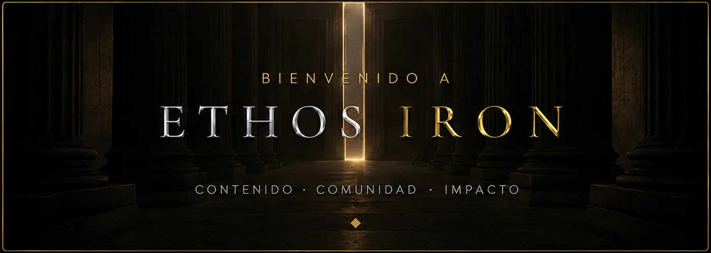

ETHOS IRON
IRON PASS
Apertura de fundadoresCómo piensa y decide ella, qué hay detrás del discurso que te señala y dónde estás parado legalmente. Documentado, con las fuentes a la vista para que lo compruebes tú mismo.
aquí va el vídeo
Ponlo con sonido. Te lo explico todo aquí dentro.
vídeos ya grabados esperándote dentro
entregas nuevas cada semana, en días fijos
directo conmigo al mes, y grabado
Y todos los días: el grupo privado de WhatsApp, donde estoy yo y donde puedes preguntar lo que no le preguntarías a nadie más.
Las mismas discusiones, los mismos silencios, la misma sensación de no saber qué ha cambiado.
Empieza bien, se enfría, se acaba. Y nunca sabes en qué punto se torció.
Con la parte legal encima y la sensación de haber perdido años. No quieres repetirlo.
Y sabes que eso no es una decisión, es una retirada. Aquí no se aprende a evitar: se aprende a distinguir.
[Qué entendió que antes no veía.]
Nombre, ciudad
[Qué cambió en su relación desde que entró.]
Nombre, ciudad
[Qué esperaba encontrar y qué se encontró.]
Nombre, ciudad
[La parte que más le ha servido.]
Nombre, ciudad
[Qué le aporta el grupo y los directos.]
Nombre, ciudad
[A quién se lo recomendaría y por qué.]
Nombre, ciudad
Tú y yo
Una conversación privada en audio, conmigo, sobre tu caso concreto. No es una sesión de grupo ni un mensaje en un chat: soy yo escuchando lo tuyo y respondiéndote a ti.
Solo entra con las 50 plazas de fundador. Cuando se llenan, este bonus no vuelve.
Cincuenta plazas de fundador. Cuando se llenan, se cierran y el precio pasa a ser otro.
Mientras sigas dentro, no te sube nunca.
Quiero mi plaza15 días de garantía: si no es para ti, se te devuelve el dinero.
Cancelas tú mismo cuando quieras, sin llamadas ni penalización.
Tú y yo: una conversación privada en audio, conmigo, sobre tu caso concreto. Cuando se acaben las plazas, este bonus no vuelve.
En Hotmart, desde su web o su app, en el móvil o en el ordenador. Al entrar se te abre la intro y el primer capítulo; a partir de ahí llega contenido nuevo cada 5 días.
Tienes 15 días de garantía. Pides la devolución y se te devuelve el dinero, sin explicaciones ni trámites raros.
Sí, tú mismo desde Hotmart, sin penalización. Mantienes el acceso hasta el final del mes que ya has pagado.
No. Mientras no canceles, mantienes 19,90 € al mes aunque suba para quien entre después.
Al unirte recibes el enlace en tu correo. Es un grupo privado de WhatsApp donde estoy cada día.
Está documentado. Cada serie se construye sobre estudios, datos oficiales y jurisprudencia, con las fuentes citadas para que las compruebes tú mismo.
Las plazas de fundador se cierran cuando se llenan. Después, el precio es otro y el bonus ya no está.
Quiero mi plaza19,90 €/mes de fundador, en vez de 29,90 € · 50 plazas
Quiero mi plaza